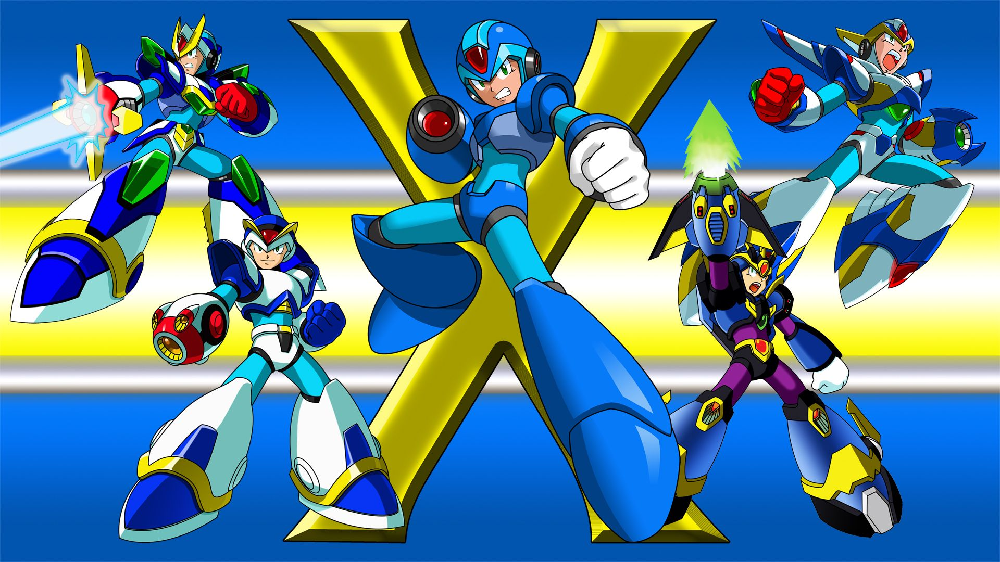
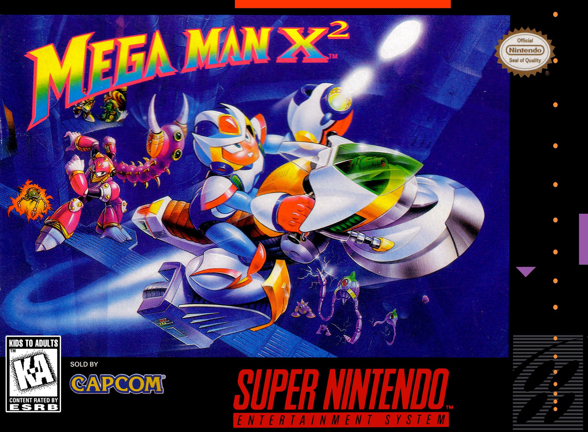
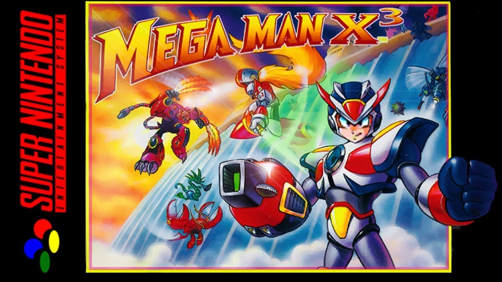
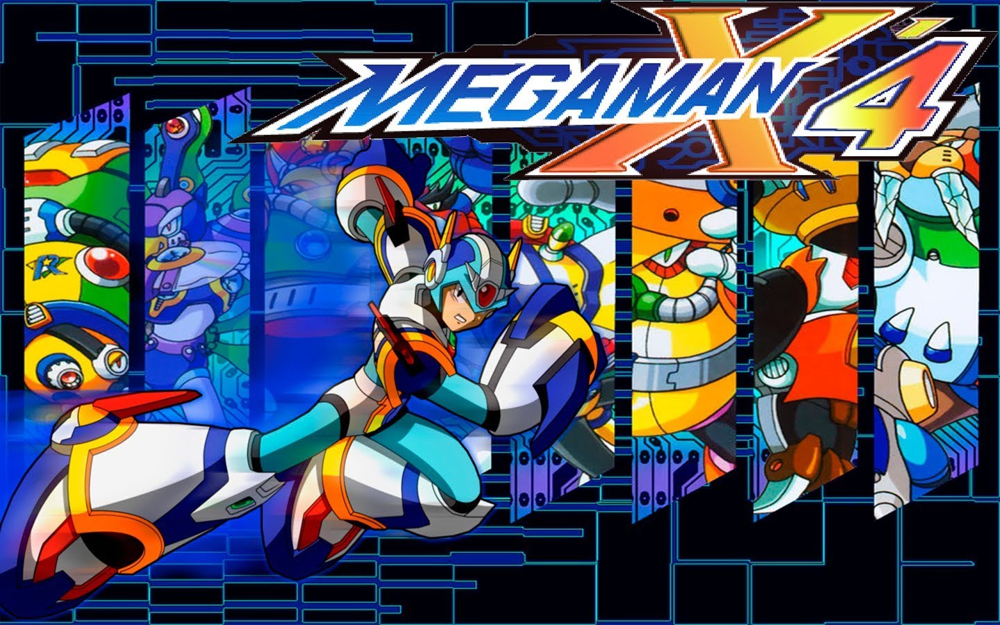
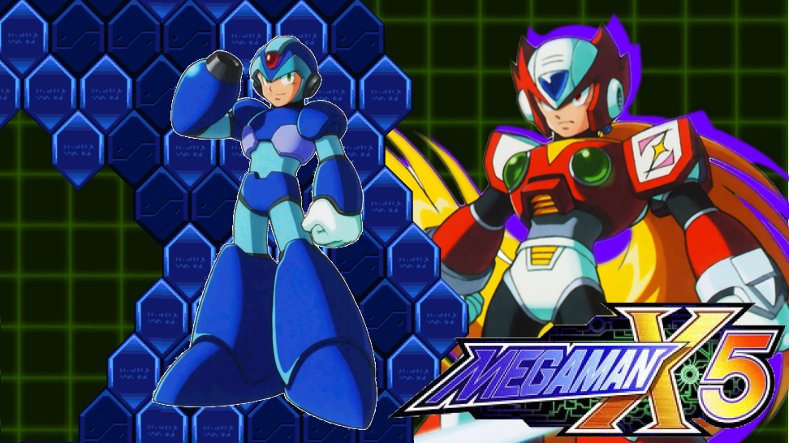
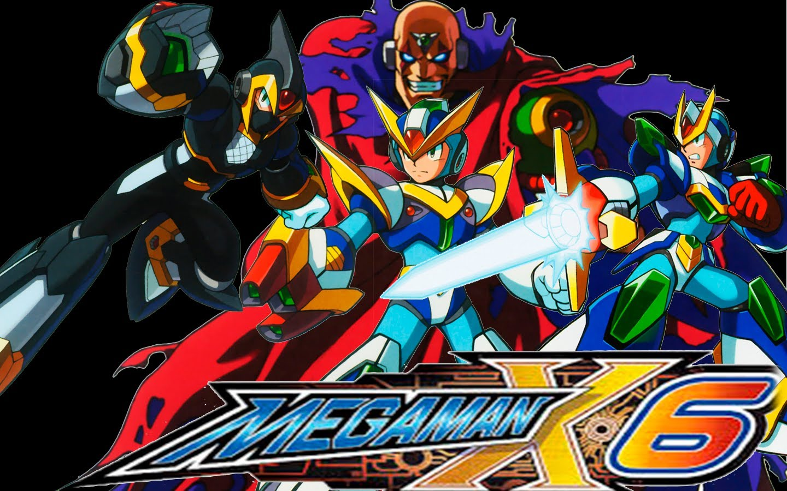

Mega Man X Series
I decided to relieve one of my most adored childhood memories and play the Mega Man X series 28 years after its original release. For the most part, it was enjoyable until you get to the later installments. I only played Mega Man X through X6 as I don’t acknowledge X7 & X8 as Mega Man games.
Mega Man X

Mega Man X was my first experience with the entire Mega Man series. I remember being a kid getting frustrated in boss battles, and revisiting stages to explore every corner looking for armor pieces, tanks, &/or hearts. 28 Years later the experience is similar, I still remembered where most things were located, but the boss battles were easier as an adult. The only battle that took me various tries was the last battle where you needed to fight Velguarder, and both of Sigma’s forms back to back. The music in the game hit right in the nostalgia and still holds up today. Mega Man X was a beautiful and fun successor to the original Mega Man series and I recommend reliving the experience as I did.
Mega Man X2
As controversial as this may be to the Mega Man community, X2 is my favorite of the trilogy released on SNES. The music is even better than its prequel. X2 took everything X did right and made it better… Except for the final boss battle against Sigma. Compared to X, Sigma was much easier to conquer in this installment, but this is still a great game that I also recommend reliving.
Mega Man X3
X3 is kind of meh, it is not better than any of the previous titles, but I wouldn’t say it is bad neither. The only memorable moment is the addition of intermission bosses Bit, Byte, and Vile MK-II. These characters gave the game the difficulty the Mega Man fans enjoy. The Sigma battle again was lackluster in comparison to the original, but it was still fun as his 2nd transformation’s hitbox is just his tiny head which gave it a bit of a challenge.
Mega Man X4
Another series refresh this time as we step from SNES to PSOne. X4 is what replaced X as my favorite game in the X series. The levels and bosses' designs were great, and more importantly the addition of Zero as a playable character in the series. This was the first game in the X series with replayability as you can beat the game with both characters and each is a different experience. Playing with X is as usual, but playing with Zero you had to get close to the action, and using the weapons acquired from bosses differed from X. While X you equip which weapon you would use, with Zero it is certain commands, or automatically. My only complaint about this game in comparison to its predecessors is that the game treats you like a baby. For example, before this game, you would know if a platform falls as you step on it by experiencing it. This time around the game will warn with a dialogue explaining the dangers ahead, which I feel kills the Mega Man experience overall. This new installment is also more story-driven and uses animated cut scenes which I loved. Sigma is back to the difficulty of X in this game. Took me various tries to take on all the 3 versions, especially during my Zero run. I HIGHLY recommend revisiting this game and beating it as both Zero and X.
Megaman X5
This is the last good game in this series. It isn’t as good as X4, but it does beat X3. The same concept for level designs, great and enjoyable boss battles, and excellent music. It follows the same concept of X4’s replayability as well. This time around Sigma is easier than X4, but not as easy as X2. This installment is similar to X3 being meh after X2, as X4 was better than this sequel.
Mega Man X6
What a piece of shit game. I didn’t remember anything about this game so everything felt like a new experience. A new awful experience. I learned recently that this game was not even made by the creator of X4 and X5. The creator was already working on the fan acclaimed Mega Man Zero series when this game was released, which led to Mega Man Zero game delays to incorporate the story of this game into the new franchise. X5 and X6 were released within months of each other and it is noticeable that these games were not made by the same team. The level design in this game is horrible! The way they decided to add difficulty to this game is by making both the levels is congesting them as much as possible, leading to a not so fun difficult experience like its predecessors. They also added ‘events’ that affect how each level is played. Depending on which effect is active while you’re playing the stage it changes the experience, which on paper sounds great and adds more replayability to the game, but it becomes annoying later on. The music is not the same as any of the previous installments and is not something I would listen to ever off the game. Sigma? I wouldn’t be able to tell you as this is the only game in recent history that I raged quit. Going back to the level effects from bosses (even after you beat them) if you are collecting tanks, hearts, &/or armor pieces. The conditions have to be perfect for you to be able to acquire them. To change the conditions the game does not allow you to simply enter a level and exit to change them, instead, you have to go through the tedious task of beating a level for the conditions to change. This is what led to rage quit once I reached the level Secret Lab 1. My first headache was finding out you need to be able to use your newly acquired weapons in standard mode, I had equipped a part that enabled me to use weapons to their full potential without the need of charging them up… This led to me having to kill myself 10 times to be able to unequip that part and try again. Upon re-entering the level I can make the first jump, but the 2nd was not possible. This led me to look up a YT tutorial to see if I sucked, or was not well equipped. Turns out you need the “jumper” ability to make the jumps thereafter. After consistently beating a random level to try and meet the conditions needed to gain the jumper ability, I became frustrated and decided to leave the game as is. 0/10 would not recommend to anyone.